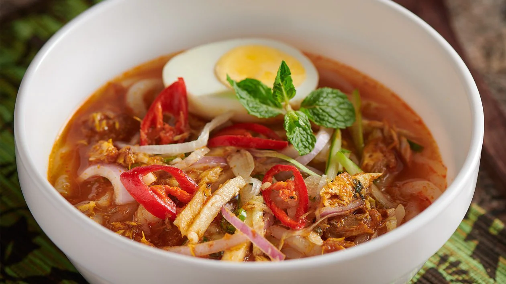

Tentang laksa Pulau Pinang
Laksa ini dikatan berasal dari orang cina yang datang ke Tanah Melayu.
kuahnya diperbuat menggunakan pelbagai jenis ikan dan menjadikan kuahnya ringan dan masam.
Mereka juga menambahkan nanas dan petis udang untuk memantapkan rasa laksa ini!
Jom kita lihat bahan-bahan yang diperlukan dan cara untuk membuatnya
Bahan-bahan yang diperlukan ialah:
Laksa
2 kg ikan kembung - rebus & ambik isi
2 biji bawang besar
15 bawang merah
2 ibu jari belacan
1 senduk cili kisar
22 keping asam keping
2 bunga kantan - belah 4
1 ikat daun Kesum
Garam
Bahan hiasan yang diperlukan ialah:
Telur - rebus & belah 2
Timun - hiris
Salad - hiris
Bawang besar - hiris
Cili hidup - hiris
Limau kasturi - belah 2
Daun pudina - jika suka
Cili padi - jika suka
Otak udang - jika suka
Cara-cara untuk membuatnya
Rebus ikan dan air rebusan yang disimpan untuk dibuat kuah. Blend kepala ikan dan tulang dan tapis airnya.
Masukkan bawang yang dikisar bersama belacan dan cili kisar ke dalam air rebusan ikan.
Masukkan asam keping, daun kesum dan bunga kantan.
Masukkan isi ikan yang dikisar halus, yang dikisar kasar dan juga isi ikan yang dicarik carik sahaja. Masak dengan api yang perlahan
Masukkan garam dan sesuaikan rasa dan kepekatannya.
Hidangkan dengan meletakkan laksa dahulu ke dalam pinggan.
Tuangkan kuah laksa ke atasnya
Tabur bahan-bahan dan sayur-sayuran yang dihiris dan nikmati.